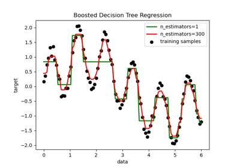

sklearn.ensemble.AdaBoostRegressor¶
-
class
sklearn.ensemble.AdaBoostRegressor(base_estimator=None, n_estimators=50, learning_rate=1.0, loss='linear', random_state=None)[source]¶ An AdaBoost regressor.
An AdaBoost [1] regressor is a meta-estimator that begins by fitting a regressor on the original dataset and then fits additional copies of the regressor on the same dataset but where the weights of instances are adjusted according to the error of the current prediction. As such, subsequent regressors focus more on difficult cases.
This class implements the algorithm known as AdaBoost.R2 [2].
Read more in the User Guide.
- Parameters
- base_estimatorobject, optional (default=None)
The base estimator from which the boosted ensemble is built. If
None, then the base estimator isDecisionTreeRegressor(max_depth=3).- n_estimatorsinteger, optional (default=50)
The maximum number of estimators at which boosting is terminated. In case of perfect fit, the learning procedure is stopped early.
- learning_ratefloat, optional (default=1.)
Learning rate shrinks the contribution of each regressor by
learning_rate. There is a trade-off betweenlearning_rateandn_estimators.- loss{‘linear’, ‘square’, ‘exponential’}, optional (default=’linear’)
The loss function to use when updating the weights after each boosting iteration.
- random_stateint, RandomState instance or None, optional (default=None)
If int, random_state is the seed used by the random number generator; If RandomState instance, random_state is the random number generator; If None, the random number generator is the RandomState instance used by
np.random.
- Attributes
- estimators_list of classifiers
The collection of fitted sub-estimators.
- estimator_weights_array of floats
Weights for each estimator in the boosted ensemble.
- estimator_errors_array of floats
Regression error for each estimator in the boosted ensemble.
feature_importances_array of shape = [n_features]Return the feature importances (the higher, the more important the feature).
References
- R0c261b7dee9d-1
Y. Freund, R. Schapire, “A Decision-Theoretic Generalization of on-Line Learning and an Application to Boosting”, 1995.
- R0c261b7dee9d-2
Drucker, “Improving Regressors using Boosting Techniques”, 1997.
Examples
>>> from sklearn.ensemble import AdaBoostRegressor >>> from sklearn.datasets import make_regression >>> X, y = make_regression(n_features=4, n_informative=2, ... random_state=0, shuffle=False) >>> regr = AdaBoostRegressor(random_state=0, n_estimators=100) >>> regr.fit(X, y) AdaBoostRegressor(n_estimators=100, random_state=0) >>> regr.feature_importances_ array([0.2788..., 0.7109..., 0.0065..., 0.0036...]) >>> regr.predict([[0, 0, 0, 0]]) array([4.7972...]) >>> regr.score(X, y) 0.9771...
Methods
fit(self, X, y[, sample_weight])Build a boosted regressor from the training set (X, y).
get_params(self[, deep])Get parameters for this estimator.
predict(self, X)Predict regression value for X.
score(self, X, y[, sample_weight])Returns the coefficient of determination R^2 of the prediction.
set_params(self, \*\*params)Set the parameters of this estimator.
staged_predict(self, X)Return staged predictions for X.
staged_score(self, X, y[, sample_weight])Return staged scores for X, y.
-
__init__(self, base_estimator=None, n_estimators=50, learning_rate=1.0, loss='linear', random_state=None)[source]¶ Initialize self. See help(type(self)) for accurate signature.
-
property
feature_importances_¶ - Return the feature importances (the higher, the more important the
feature).
- Returns
- feature_importances_array, shape = [n_features]
-
fit(self, X, y, sample_weight=None)[source]¶ Build a boosted regressor from the training set (X, y).
- Parameters
- X{array-like, sparse matrix} of shape = [n_samples, n_features]
The training input samples. Sparse matrix can be CSC, CSR, COO, DOK, or LIL. COO, DOK, and LIL are converted to CSR.
- yarray-like of shape = [n_samples]
The target values (real numbers).
- sample_weightarray-like of shape = [n_samples], optional
Sample weights. If None, the sample weights are initialized to 1 / n_samples.
- Returns
- selfobject
-
get_params(self, deep=True)[source]¶ Get parameters for this estimator.
- Parameters
- deepboolean, optional
If True, will return the parameters for this estimator and contained subobjects that are estimators.
- Returns
- paramsmapping of string to any
Parameter names mapped to their values.
-
predict(self, X)[source]¶ Predict regression value for X.
The predicted regression value of an input sample is computed as the weighted median prediction of the classifiers in the ensemble.
- Parameters
- X{array-like, sparse matrix} of shape = [n_samples, n_features]
The training input samples. Sparse matrix can be CSC, CSR, COO, DOK, or LIL. COO, DOK, and LIL are converted to CSR.
- Returns
- yarray of shape = [n_samples]
The predicted regression values.
-
score(self, X, y, sample_weight=None)[source]¶ Returns the coefficient of determination R^2 of the prediction.
The coefficient R^2 is defined as (1 - u/v), where u is the residual sum of squares ((y_true - y_pred) ** 2).sum() and v is the total sum of squares ((y_true - y_true.mean()) ** 2).sum(). The best possible score is 1.0 and it can be negative (because the model can be arbitrarily worse). A constant model that always predicts the expected value of y, disregarding the input features, would get a R^2 score of 0.0.
- Parameters
- Xarray-like, shape = (n_samples, n_features)
Test samples. For some estimators this may be a precomputed kernel matrix instead, shape = (n_samples, n_samples_fitted], where n_samples_fitted is the number of samples used in the fitting for the estimator.
- yarray-like, shape = (n_samples) or (n_samples, n_outputs)
True values for X.
- sample_weightarray-like, shape = [n_samples], optional
Sample weights.
- Returns
- scorefloat
R^2 of self.predict(X) wrt. y.
Notes
The R2 score used when calling
scoreon a regressor will usemultioutput='uniform_average'from version 0.23 to keep consistent withmetrics.r2_score. This will influence thescoremethod of all the multioutput regressors (except formultioutput.MultiOutputRegressor). To specify the default value manually and avoid the warning, please either callmetrics.r2_scoredirectly or make a custom scorer withmetrics.make_scorer(the built-in scorer'r2'usesmultioutput='uniform_average').
-
set_params(self, **params)[source]¶ Set the parameters of this estimator.
The method works on simple estimators as well as on nested objects (such as pipelines). The latter have parameters of the form
<component>__<parameter>so that it’s possible to update each component of a nested object.- Returns
- self
-
staged_predict(self, X)[source]¶ Return staged predictions for X.
The predicted regression value of an input sample is computed as the weighted median prediction of the classifiers in the ensemble.
This generator method yields the ensemble prediction after each iteration of boosting and therefore allows monitoring, such as to determine the prediction on a test set after each boost.
- Parameters
- X{array-like, sparse matrix} of shape = [n_samples, n_features]
The training input samples.
- Returns
- ygenerator of array, shape = [n_samples]
The predicted regression values.
-
staged_score(self, X, y, sample_weight=None)[source]¶ Return staged scores for X, y.
This generator method yields the ensemble score after each iteration of boosting and therefore allows monitoring, such as to determine the score on a test set after each boost.
- Parameters
- X{array-like, sparse matrix} of shape = [n_samples, n_features]
The training input samples. Sparse matrix can be CSC, CSR, COO, DOK, or LIL. COO, DOK, and LIL are converted to CSR.
- yarray-like, shape = [n_samples]
Labels for X.
- sample_weightarray-like, shape = [n_samples], optional
Sample weights.
- Returns
- zfloat
Examples using sklearn.ensemble.AdaBoostRegressor¶
